(22) Analysis: Grad Bias Var + Dist Consistency#
Project: _PoissonGradEstim
device_idx = 1
device = f'cuda:{device_idx}'
# dtype = torch.bfloat16 # half the size of float32
dtype = torch.float32
print(f"device: {device}, dtype: {dtype} ——— host: {os.uname().nodename}")
device: cuda:1, dtype: torch.float32 ——— host: mach
import importlib
def purge_modules_from_path(root_dir: str) -> None:
root_dir = os.path.abspath(root_dir) + os.sep
for name, mod in list(sys.modules.items()):
f = getattr(mod, "__file__", None)
if f is None:
continue
try:
if os.path.abspath(f).startswith(root_dir):
del sys.modules[name]
except Exception:
# Defensive: some modules have weird __file__ values
pass
# --- 1) Import from _PoissonGradEstim ---
pge_path = pjoin(os.environ['HOME'], 'Dropbox/git', project_name)
sys.path.insert(0, pge_path)
try:
from analysis.grad_analysis import *
from analysis.dist_analysis import *
from analysis.plotting_functions import *
finally:
sys.path[:] = [p for p in sys.path if p != pge_path]
# Important: purge anything imported from that repo (including a "base" package, if present)
purge_modules_from_path(pge_path)
importlib.invalidate_caches()
# --- 2) Import from PoissonVAE ---
pvae_path = pjoin(os.environ["HOME"], "Dropbox/git", "PoissonVAE")
sys.path.insert(0, pvae_path)
from base.utils_model import load_model
Make fig dir#
fig_dir = fig_base_dir / f'{project_name}_figs-(2026_01_28)'
fig_dir.mkdir(exist_ok=True)
os.listdir(str(fig_dir))
['dist_consistency_wasser.pdf',
'soft_indicators.pdf',
'phi.pdf',
'dist_wasser_lam-[2,20,100].pdf',
'grad_analysis_all_rates.pdf',
'dist_consistency_bias.pdf',
'dist_moments_lam-[2,20,100].pdf',
'dist_moments_theory.pdf',
'grad_analysis_lam-20.pdf',
'dist_consistency_ratio.pdf',
'grad_analysis_raw_lam-20.pdf']
Load model#
model = 'poisson_uniform_c(-4)_vH16_z-512_k-32_fp_nrm-none_<conv|lin>'
fit = 'indic-sigmoid_mc_b1000-ep3000-lr(0.001)_beta(1:0x0.5)_temp(0.05:lin-0.5)_gr(500)_(2026_01_06,16:24)'
tr, meta = load_model(model, fit, device=device)
print(meta)
{ 'timestamp': '2026_01_06,16:24', 'checkpoint': 3000, 'global_step': 309000, 'root': '/home/hadi/Projects/PoissonVAE/models/poisson_uniform_c(-4)_vH16_z-512_k-32_fp_nrm-none_<conv|lin>/indic-sigmoid_m c_b1000-ep3000-lr(0.001)_beta(1:0x0.5)_temp(0.05:lin-0.5)_gr(500)_(2026_01_06,16:24)', 'file': 'PoissonVAE+TrainerVAE-3000_(2026_01_06,21:47).pt' }
Gradient analysis#
Load \(\Phi\)#
phi = tr.model.fc_dec.get_weight().data
phi = phi.to(device=device, dtype=dtype)
phi.shape
torch.Size([256, 512])
save_obj(tonp(phi), file_name='pvae_phi', save_dir=tmp_dir, mode='npy')
[PROGRESS] 'pvae_phi.npy' saved at /home/hadi/Dropbox/git/jb-progress-2026/tmp
u0 = tonp(tr.model.log_rate.squeeze())
fig, _ = tr.model.show(order=np.argsort(u0))
fig.savefig(fig_dir / 'phi.pdf', bbox_inches='tight')
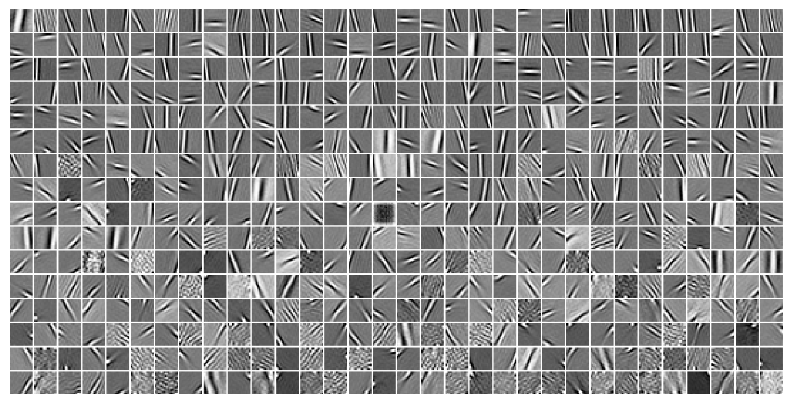
Load stimulus \(x\)#
batch_size = 90
x = tr.dl_vld.dataset.tensors[0].flatten(start_dim=1)
var = tonp(torch.var(x, dim=1))
x = x[np.argsort(var)]
x = x[-batch_size:]
x = x.to(device=device, dtype=dtype)
x.shape
torch.Size([90, 256])
imshow(x[-50].reshape(16, 16), cmap='Greys_r')
plt.show()
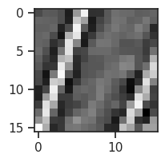
%%time
df = run_gradient_analysis(x, phi, n_samples=100)
Starting Sweep (n_samples=100, batch_size=90) firing rates: [0.1, 0.5, 1, 2, 5, 8, 10, 15, 20, 30, 40, 70, 100] temperatures: [0.02, 0.05, 0.1, 0.15, 0.2, 0.25, 0.3, 0.35, 0.4, 0.45, 0.5]
CPU times: user 1min 8s, sys: 10.3 s, total: 1min 19s
Wall time: 1min 19s
order = ['EAT_sigmoid', 'EAT_cubic', 'GS']
metrics = ['Cos', 'CosSample', 'BiasEnergy', 'NoiseEnergy']
ylim = {
'Cos': (-0.05, 1.05),
'CosSample': (-0.05, 1.05),
'BiasEnergy': (0.001, 3.1),
'NoiseEnergy': (0.001, 300.3),
}
yscale = {
'Cos': 'linear',
'CosSample': 'linear',
'BiasEnergy': 'log',
'NoiseEnergy': 'log',
}
fig, _ = plot_metrics_vs_temp(
df,
metrics=metrics,
order=order,
ylim=ylim,
yscale=yscale,
add_labels=True,
metrics_as_rows=True,
)
# fig.savefig(fig_dir / 'grad_analysis_all_rates.pdf', bbox_inches='tight')
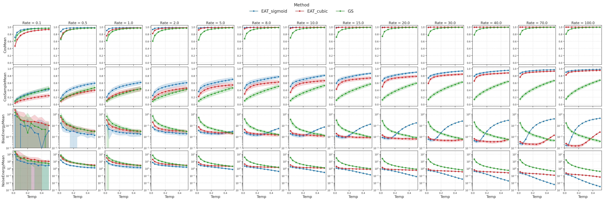
order = ['EAT_sigmoid', 'EAT_cubic', 'GS']
# cos
_ = plot_metric_vs_temp(df, metric='Cos', order=order, ylim=(-0.05, 1.05))
_ = plot_metric_vs_temp(df, metric='CosSample', order=order, ylim=(-0.05, 1.05))
# energy
_ = plot_metric_vs_temp(df, metric='BiasEnergy', order=order, ylim=(-0.1, 1.1))
_ = plot_metric_vs_temp(df, metric='NoiseEnergy', order=order, ylim=(-0.3, 10.3))
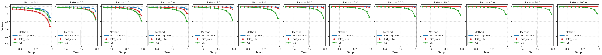
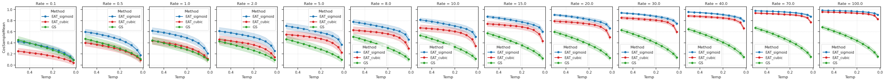
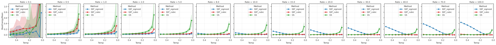
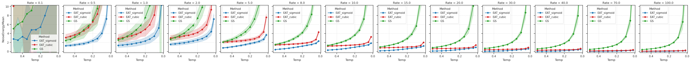
#fig = plot_mean_results(df, lam=0.1)
_ = plot_mean_results(df, lam=10)
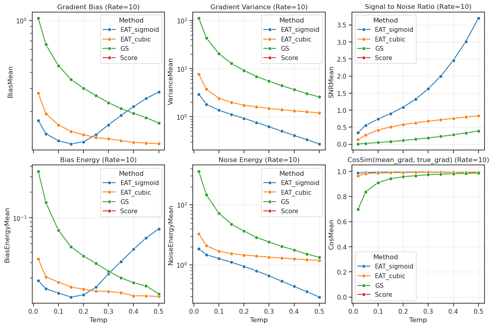
lam = 20
rates_to_plot = [lam]
# temps_to_plot = [0.05, 0.2, 0.5]
df_selected = df.loc[
df['Rate'].isin(rates_to_plot) # &
# (df['Temp'] >= 0.05)
]
order = ['EAT_sigmoid', 'EAT_cubic', 'GS']
metrics = ['Cos', 'CosSample', 'BiasEnergy', 'NoiseEnergy']
ylim = {
'Cos': (0.70, 1.01),
'CosSample': (0.05, 1.01),
'BiasEnergy': (3e-3, 1e2),
'NoiseEnergy': (3e-3, 1e2),
}
yscale = {
'Cos': 'linear',
'CosSample': 'linear',
'BiasEnergy': 'log',
'NoiseEnergy': 'log',
}
fig, axes = plot_metrics_vs_temp(
df_selected,
metrics=metrics,
order=order,
ylim=ylim,
yscale=yscale,
sharey=False,
legend=(0, 0),
metrics_as_rows=False,
add_labels=False,
)
# fig.savefig(fig_dir / f'grad_analysis_lam-{lam}.pdf', bbox_inches='tight')
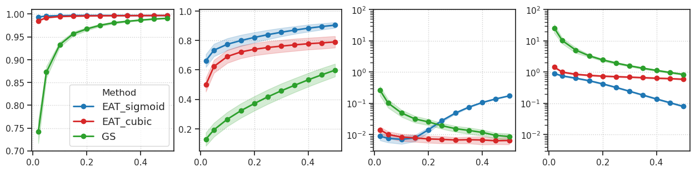
Consistency analysis#
dtype = torch.float32
kws = dict(
n_samples=50_000,
n_trials=100,
device=device,
dtype=dtype,
)
Mean and Var (bias/ratios)#
%%time
df2 = run_moment_consistency_test(**kws)
Running Moment Consistency Test (n_samples=50000, n_trials=100) firing rates: [0.1, 0.5, 1, 2, 5, 8, 10, 15, 20, 30, 40, 70, 100] temperatures: [0.02, 0.05, 0.1, 0.15, 0.2, 0.25, 0.3, 0.35, 0.4, 0.45, 0.5]
CPU times: user 1min 5s, sys: 7.97 s, total: 1min 13s
Wall time: 1min 14s
fig, _ = plot_dist_consistency(df2, kind='bias', sharey=False)
# fig.savefig(fig_dir / 'dist_consistency_bias.pdf', bbox_inches='tight')
fig, _ = plot_dist_consistency(df2, kind='ratio', sharey=False)
# fig.savefig(fig_dir / 'dist_consistency_ratio.pdf', bbox_inches='tight')
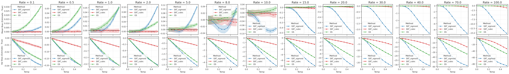
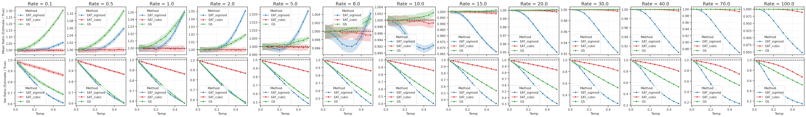
_ = plot_dist_consistency(df2, kind='bias', sharey=True)
_ = plot_dist_consistency(df2, kind='ratio', sharey=True)
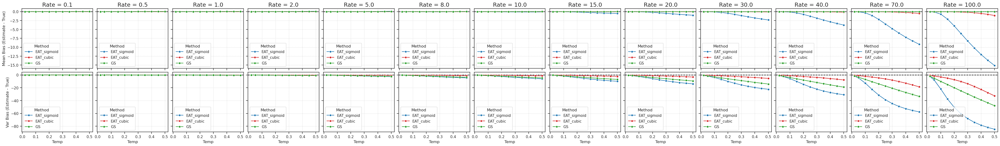
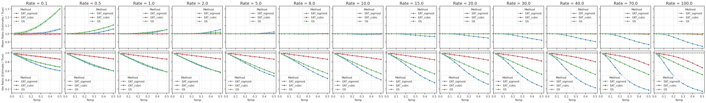
rates_to_plot = [2, 20, 100]
fig, _ = plot_dist_consistency(
df2.loc[df2['Rate'].isin(rates_to_plot)],
kind='ratio',
legend=[(0, 0), (0, 1), (0, 2)],
add_labels=True,
sharey=False,
)
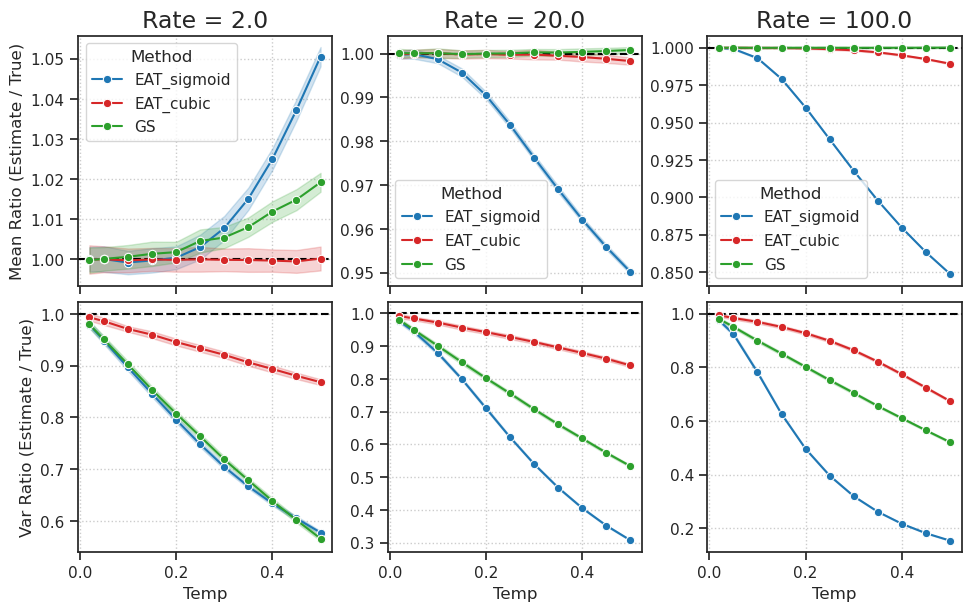
rates_to_plot = [2, 20, 100]
fig, _ = plot_dist_consistency(
df2.loc[df2['Rate'].isin(rates_to_plot)],
kind='ratio',
legend=[(0, 0)], # True, # [(0, 0), (0, 1), (0, 2)],
add_labels=False,
sharey=False,
)
lam_str = str(rates_to_plot).replace(' ', '')
# fig.savefig(fig_dir / f'dist_moments_lam-{lam_str}.pdf', bbox_inches='tight')
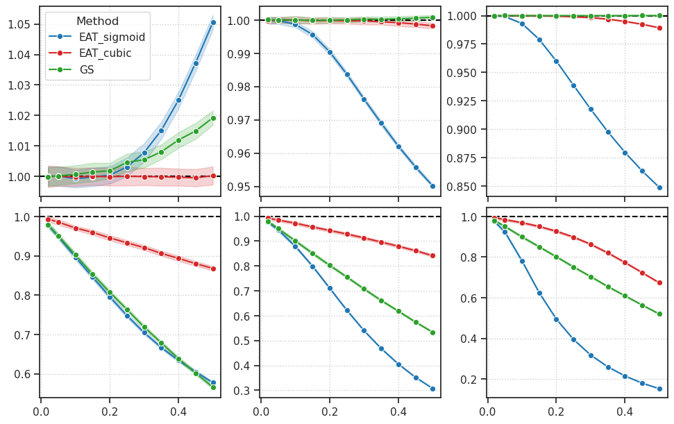
Wasserstein distance#
%%time
df3 = run_wasserstein_analysis(normalization='std', **kws)
Running Wasserstein Analysis (n_samples=50000, n_trials=100, norm=std) firing rates: [0.1, 0.5, 1, 2, 5, 8, 10, 15, 20, 30, 40, 70, 100] temperatures: [0.02, 0.05, 0.1, 0.15, 0.2, 0.25, 0.3, 0.35, 0.4, 0.45, 0.5]
CPU times: user 1min 4s, sys: 11.3 s, total: 1min 15s
Wall time: 1min 15s
fig, _ = plot_dist_consistency(df3, kind='wasser', sharey=False)
# fig.savefig(fig_dir / 'dist_consistency_wasser.pdf', bbox_inches='tight')
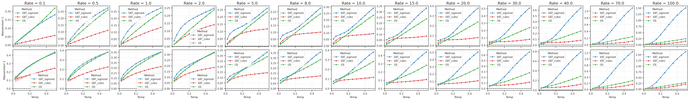
_ = plot_dist_consistency(df3, kind='wasser', sharey=True)
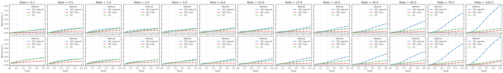
rates_to_plot = [2, 20, 100]
ylims = [-0.005, None, None]
fig, axes = plot_dist_consistency(
df3.loc[df3['Rate'].isin(rates_to_plot)],
add_labels=False,
kind='wasser',
legend=(0, 1),
sharey=False,
)
for ax in axes[1, :]:
ax.remove()
# 1. Set ylim lower bound from list
for ax, ymin_val in zip(axes[0, :], ylims):
_, ymax = ax.get_ylim()
ax.set_ylim(ymin_val, ymax)
# 2. Recover x-axis tick labels (lost when row 1 was removed due to sharex)
for ax in axes[0, :]:
ax.tick_params(labelbottom=True)
ax.set_xlabel('Temp')
lam_str = str(rates_to_plot).replace(' ', '')
# fig.savefig(fig_dir / f'dist_wasser_lam-{lam_str}.pdf', bbox_inches='tight')
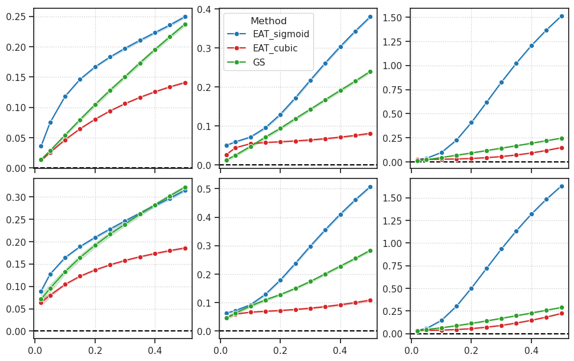
fig
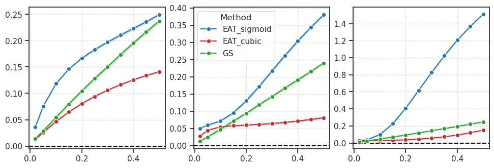
Surrogate = bad#
def run_fixed_point_analysis(n_samples=50000):
"""
Sweeps firing rates to find where the gradient actually crosses zero.
Target Rate = 10.0.
"""
target_k = 10.0
# Sweep rates around the target
rates = [6.0, 8.0, 9.0, 9.5, 10.0, 10.5, 11.0, 12.0, 14.0]
# We choose a high temp to exaggerate the "Ghost" effect for the Jab
tau = 1.0
results = []
print(f"Running Fixed Point Analysis (Target={target_k}, Temp={tau})...")
for r in rates:
lambda_val = torch.ones(n_samples) * r
log_rate = lambda_val.log().detach().clone().requires_grad_(True)
# --- 1. EAT Cubic (Relaxed Fwd / Relaxed Bwd) ---
# "Our Method"
dist = Poisson(log_rate=log_rate, temp=tau, indicator_approx='cubic')
z_soft = dist.rsample()
loss = 0.5 * ((target_k - z_soft)**2).sum() # Soft Loss
grad = torch.autograd.grad(loss, log_rate)[0]
results.append({
'Rate': r,
'Gradient': grad.mean().item(),
'Method': 'EAT (Cubic)'
})
# --- 2. SNN Surrogate (Hard Fwd / Sigmoid Bwd) ---
# "Their Method" - Coupled noise
# Forward: True Poisson (Hard). Backward: Sigmoid (Soft).
log_rate.grad = None # Reset
# We manually construct the coupled surrogate
# 1. Sample exponential times (shared source of randomness)
rate = torch.exp(log_rate)
n_exp = dist.n_exp # Reuse from previous or recompute
exp_dist = torch.distributions.Exponential(rate)
times = torch.cumsum(exp_dist.rsample((n_exp,)), dim=0)
# 2. Hard Forward (True Counts)
z_hard = (times < 1.0).sum(dim=0).float()
# 3. Soft Backward (Sigmoid Ghosts)
logits = (1 - times) / tau
z_soft_sigmoid = torch.sigmoid(logits).sum(dim=0)
# 4. Surrogate Pass: z_surr = z_hard + (z_soft - z_soft.detach())
z_surr = z_hard + (z_soft_sigmoid - z_soft_sigmoid.detach())
loss = 0.5 * ((target_k - z_surr)**2).sum() # Hard Loss (what they care about)
grad = torch.autograd.grad(loss, log_rate)[0]
results.append({
'Rate': r,
'Gradient': grad.mean().item(),
'Method': 'SNN Surrogate (Sigmoid)'
})
return pd.DataFrame(results)
def plot_fixed_point(df):
plt.figure(figsize=(10, 6))
sns.lineplot(data=df, x='Rate', y='Gradient', hue='Method', marker='o')
# Add visual guides
plt.axhline(0, color='black', linestyle='--', linewidth=1)
plt.axvline(10, color='green', linestyle=':', label='True Target (10)')
plt.title(f"Optimization Fixed Point Analysis (Temp=1.0)")
plt.ylabel("Mean Gradient (Positive = Decrease Rate)")
plt.xlabel("Current Firing Rate")
plt.legend()
plt.grid(True, alpha=0.3)
plt.gcf()
plt.show()
return fig
df4 = run_fixed_point_analysis(n_samples=100_000)
Running Fixed Point Analysis (Target=10.0, Temp=1.0)...
fgi = plot_fixed_point(df4)
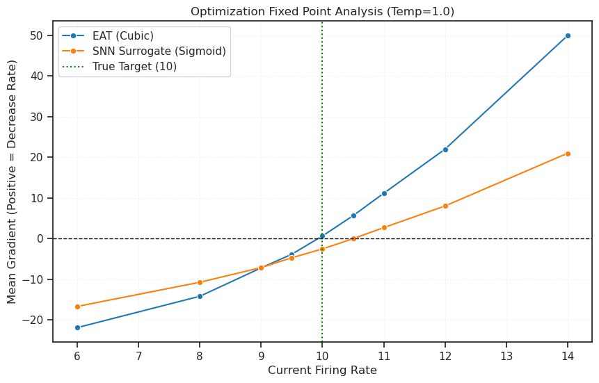